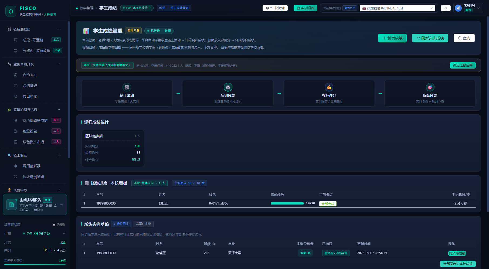
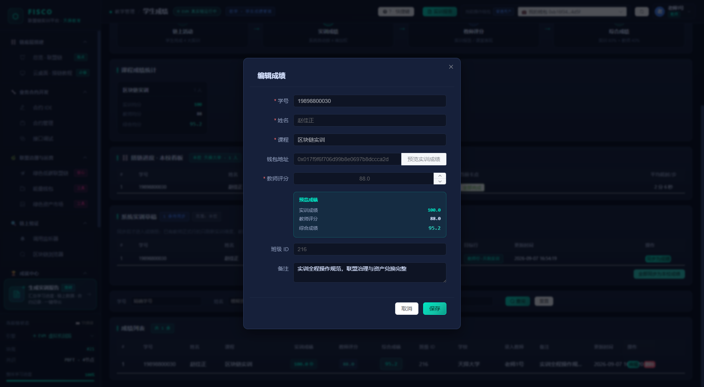
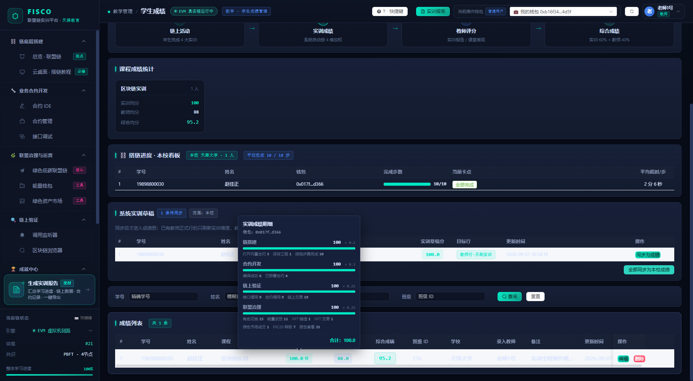
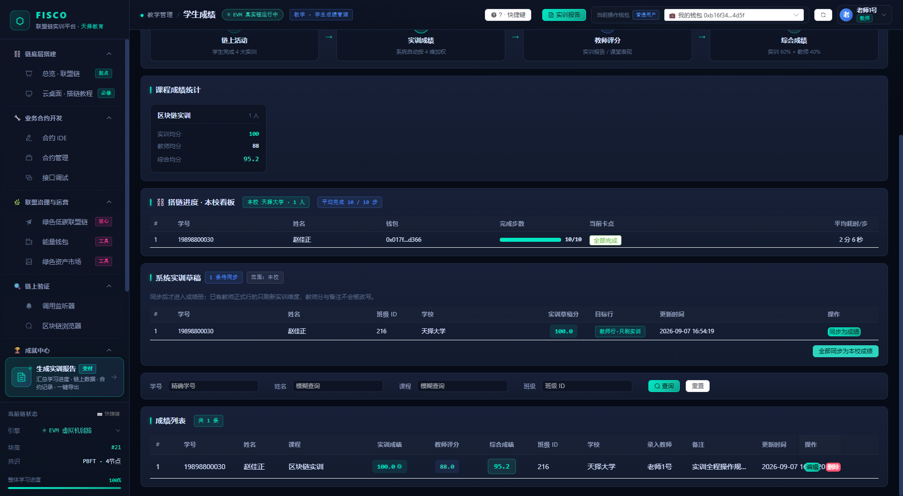
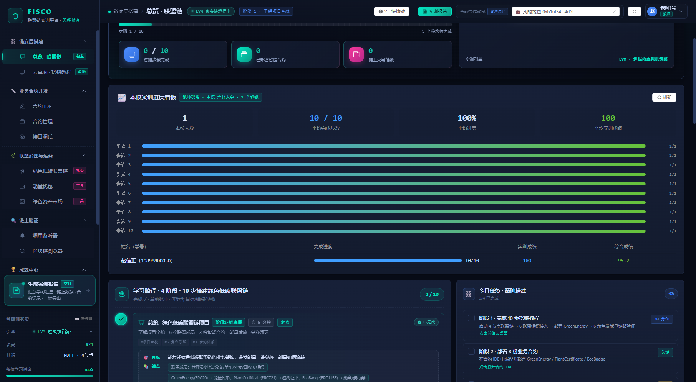
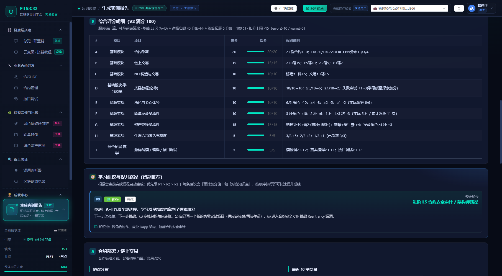
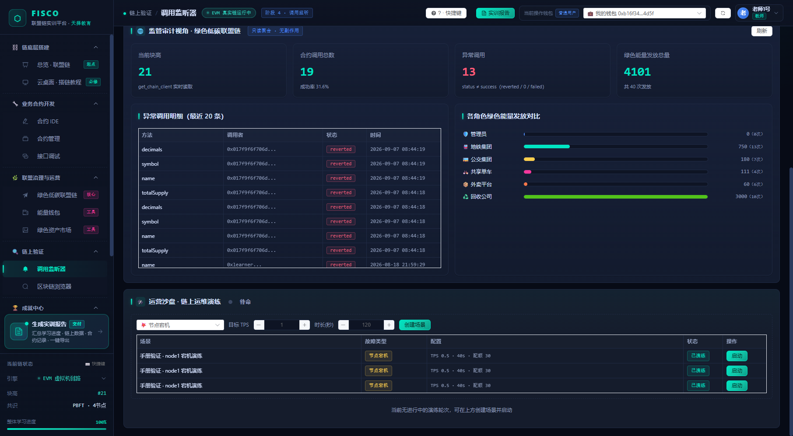

FISCO CHAIN · TRAINING PLATFORM
教师使用手册从开课准备到成绩归档
开课准备 · 课堂演示 · 学情跟踪 · 评分定档 · 演练出题 · 争议处理
适用角色：实训教师（roleId = 3） / 课程管理员（roleId = 1）
本手册中所有按钮路径、公式与数值，均已在真实环境用教师账号逐项验证；
凡平台显示与预期不一致之处，正文都当场给出原因与教师侧的可用替代路径。
FISCOChain 联盟链实训平台 · 教师使用手册 HOW TO USE THIS MANUAL
READ FIRST
怎么用这本手册
今天要开课 只做第 03 章的 10 项自检（12 分钟），再按第 04 章的演示脚本走一遍。其余章节留到需要时查。
要给成绩定档 直接看第 05 章（录入 / 预览 / 刷新）与第 06 章（评分量表 + 等级锚点），两页就能出分。
学生说分数不对 看第 07 、11 章：三条学情取数路径 + 六类争议的标准答复话术。
目录
01 教师能做什么：权限矩阵与身份三件套 角色差异 · 数据可见范围 02 登录与会话 · 界面导览 SSO 登录 · 6 组导航 · 引擎切换陷阱 03 开课准备：10 项自检清单 环境 · 学校绑定 · 名单 · 目录治理 04 课堂演示脚本（45 分钟一场） 搭链 → 合约 → 治理 → 验证 05 学生成绩管理：录入 · 预览 · 刷新 四维公式 · 草稿同步 · 快照与实时 06 教师评分量表与等级建议 评分锚点 · 加减分项 07 学情查看：班级看板与取数路径 班级看板 · 只读接口 · 卡点定位 08 实训报告的教师视角 九维分值 · 两种口径 · 导出 09 运营沙盘：故障演练出题与判分 五步出题 · 4 类故障 · MTTD / MTTR 10 一学期教学闭环 SOP 16 周排期 · 考核权重 11 争议处理 · 数据归档 六类争议标准答复 12 教师侧 FAQ 与故障排查 12 问 12 答 附 A 权限与接口速查表 能给谁用 · 怎么调 附 B 评分录入模板与取数脚本 可直接复制使用
开课前必须知道的三件事
① 平台是真链 ，不是仿真：你演示时产生的合约、交易、能量都会进真实数据并被计入某个钱包的报告；
② 教师账号的班级要自己绑一次 ：SSO 未必下发班级，没绑定时所有班级看板只会看到你自己录入的行。
绑定入口在「学生成绩」页顶部的橙色提示卡里（第 03 章 3.1），绑完学生登录一次即自动进花名册 ；
③ 草稿与成绩册是分开的两张表 ：学生点「同步实训草稿」只写草稿，只有你在成绩页点「同步为成绩」
才进成绩册（第 05 章 5.5）。看一眼报告、查一次成绩都不会改学生的分。
FISCOChain 联盟链实训平台 · 教师使用手册 02 / 20
第 01 章 · 教师角色与权限 CHAPTER 01 · ROLE & PERMISSIONS
CHAPTER 01
教师能做什么：一张权限矩阵说清楚
平台只有三类登录身份：管理员（1） 、教师（3） 、学生（4） 。教师与管理员在代码里被合称
"特权角色"，能力几乎相同；区别只在管理员额外掌握账号与链环境的运维职责。教师不是 只看成绩的角色——
你可以以学生身份完成平台上的任何一步操作 ，这正是课堂演示的基础。
1.1 能力矩阵
能力 教师 管理员 学生 说明（实测结论）
完成全部实训操作（搭链 / IDE / 合约 / 钱包 / NFT / 生态 / 演练处置） ✔ ✔ ✔ 教师账号可完整走通学生流程，用于课前自测与课堂演示 学生成绩管理 /grades ✔ ✔ ✘ 菜单「教学管理 · 学生成绩」仅对教师 / 管理员显示，路由级拦截 查看任意学生的实训报告 接口 接口 仅本人 后端允许教师带 ?wallet= 查任意人；但页面上没有学生选择器 ，见第 07 章 实时试算某钱包的实训成绩 ✔ ✔ ✘ 成绩对话框内「预览实训成绩」按钮，不落库 运营沙盘：创建场景 / 启动 / 一键停止 ✔ ✔ ✘ 学生只能"提交处置动作"，不能出题与停机 班级学情看板（10 步搭链进度） ✔ ✔ ✘ 绑定任教班级后即有数据（3.1）：花名册随学生登录自动登记，看板逐人显示完成步数与卡点 重置某钱包的搭链进度 ✔ 高危 ✔ 高危 仅本人 云桌面「重置进度」按当前操作钱包 删除进度；教师可代任意钱包，误操作会直接清掉学生的 D 项依据 切换链执行引擎（侧边栏「引擎」） 假 假 假 后端没有 对应接口（实测 POST /api/chain/mode = 404），只改本机显示
1.2 身份三件套：账号 / 操作钱包 / 联盟角色
① 登录账号 形如 tzt001。决定菜单可见性与成绩归属（谁录的分）。教师账号来自实训 SSO，学校、班级由 SSO 下发。
② 当前操作钱包 顶栏「当前操作钱包」。教师登录后会自动发放并绑定一个本人 0x 地址 （实测形如 0xb16f34bd…4d5f），你的演示数据都挂在它下面。下拉里另有 6 个联盟角色钱包。
③ 联盟角色 "绿色低碳联盟链"页里的管理员 / 地铁 / 公交 / 单车 / 外卖 / 回收 6 角色。角色 = 能量发行权，与钱包是两回事。
一句话记住分工
账号 决定你能进哪些页面；钱包 决定这些数据记在谁头上；角色 决定你能不能发行能量。
演示时想"表演一个学生"，正确做法是切角色 ，而不是随便切到一个陌生钱包。
FISCOChain 联盟链实训平台 · 教师使用手册 03 / 20
第 02 章 · 登录与界面 CHAPTER 02 · LOGIN & UI TOUR
CHAPTER 02
登录、会话恢复与界面导览
2.1 登录（教师账号）
打开平台地址进入登录页，输入账号 （如 tzt001）与密码 ，点击登录 。
平台先调用 /api/auth/encrypt 用 RSA 加密密码，再带 username + passwordEncode 请求 SSO 校验，密码不会明文出网 。
校验通过后，后端签发 24 小时的平台会话令牌（JWT）；前端保存到本地并自动注入后续请求。
登录成功进入总览 页：顶栏右侧出现"老师1号 / 教师"，"当前操作钱包"自动切到你的本人钱包。
24 小时内刷新页面会自动恢复会话；过期后重新登录即可。从 SSO 门户跳转（URL 带 token）会自动完成免密登录。
图 2-1 教师登录后的总览页顶部：左侧是阶段进度与三项自统计（搭链步骤 / 已部署合约 / 链上交易），
右侧是实训链状态 卡（链运行中 · 当前块高 · 交易总数 · 部署合约）与实训引擎行。
卡里的「协议分布 」小饼条只在当前钱包自己部署过标准合约 时才渲染（standard_breakdown 为空则整块不出现），
教师看到它缺席不是故障；下方「实训进度看板」在教师身份下会显示为“教师视角”（口径见 7.1）。
登录失败：提示语本身就是诊断结论
登录链路分三段（取密文 → 提交校验 → 签发会话令牌），每一段失败给出的话不一样 ：
SSO 原文已透传，不会把密码错误也包成服务异常。按下表对号入座即可。
你看到的提示 真实原因 怎么办
无法连接 SSO 服务：… 后端连不上 SSO（网络 / 服务未起 / 地址配错） 与账号无关 ；找运维查 EXTERNAL_API_BASE 与网络，不要让学生重复重试SSO 加密接口 HTTP 4xx / 5xx 连“取密码密文”这一步就失败，请求还没发出去 同上；换账号密码无效，先确认后端与 SSO 可达 SSO 返回的中文原话（如「用户名或密码错误」「账号已停用」） 账号或密码确实错了，或账号状态问题 用小写账号、无空格重输一次；仍失败走教务重置密码
先排除会话残留 ：换浏览器或无痕窗口再试一次；旧令牌不会自动失效，可能让你把“界面停在旧页”误判成“登不上”。同班学生能登而你不能 ：是 SSO 侧教师账号状态问题，把账号 + 时间点 发给运维查 SSO 日志。不要连续暴力重试 ：可能触发风控锁定；课上急用可先用学生账号完成演示，课后修账号。
2.2 左侧导航：与学生完全一致，只多一组
分组 包含页面 教师用途
⛓️ 链底层搭建 总览 · 联盟链 ／ 云桌面 · 搭链教程 课堂演示起点；核对 10 步教程命令是否可执行 🔧 业务合约开发 合约 IDE ／ 合约管理 ／ 接口调试 演示写—编—部—调闭环；A / H / I 项得分点 🌿 联盟治理与运营 绿色低碳联盟链 ／ 能量钱包 ／ 绿色资产市场 6 角色发放与兑换演示；E / F / G / C 项得分点 🔍 链上验证 调用监听器 ／ 区块链浏览器 监管审计视角看全班数据；运营沙盘出题口 🏆 成就中心 成就墙 · 挑战任务 激励工具；排行榜按钱包展示，教师本人也会上榜 🎓 教学管理 （教师 / 管理员可见）学生成绩 录分、刷新、看班级看板 底部大按钮 生成实训报告实训报告 教师打开看到的是全局口径 报告（见第 08 章）
FISCOChain 联盟链实训平台 · 教师使用手册 04 / 20
第 02 章 · 登录与界面 · 续 CHAPTER 02 · UI TOUR (CONT.)
2.3 顶栏与底栏：教师要看懂的四块信息
面包屑 + 阶段标签 「教学管理 / 学生成绩 · 教学 · 学生成绩管理」。左侧彩色标签告诉你当前页面属于哪个教学阶段，与学生看到的完全相同，便于口头指挥"打开阶段 3 的联盟治理页"。
链状态灯 显示 EVM 真实链运行中 ／FISCO 节点已连接 ／本地沙盒模式 。注意 这个灯会被本机覆盖值影响，见 2.4。
当前操作钱包 下拉共 7 项：💼 我的钱包（你本人）+ 6 个联盟角色钱包（0xadmin／0xmetro／0xbus／0xbike／0xtakeout／0xrecycle）。切换即代表"以该身份写链"。
用户卡 / 快捷键 / 报告 用户卡弹出姓名、账号、学校、角色与退出；「? · 快捷键」呼出面板；「实训报告」一键进入报告页。数字键 1–9 直达 9 个主页面。
侧边栏底部「当前链状态」固定展示：引擎 、块高 、共识 PBFT · 4节点 、整体学习进度 。
2.4 侧边栏两个读数：一个是假动作，一个会说真话
图 2-2 侧边栏「引擎」弹层：三个引擎选项 + "切换会重置链状态（块高归零）"的警示文案。
控件 平台承诺的行为 实测真实行为
引擎切换（FISCO / EVM / 本地沙盒） 切换链执行引擎，重置链状态、块高归零 只改你这台电脑的显示 ：后端 POST /api/chain/mode 不存在（实测 404），链照旧运行、块高不变，但顶栏灯与全站"模式"标签会跟着变，极易误判环境 整体学习进度百分比 反映本人 / 本班学习进度 已是后端真实进度 ：学生 = 本人 10 步完成占比；教师 / 管理员 = 班级 / 全校平均完成占比。注意 未绑定班级时会显示 0% ，那是“取不到名单”而不是“全班没做”（见 3.1）
课堂上的安全用法
需要确认链环境时，不要点引擎切换 ，改为新开一个浏览器标签访问
http://<平台地址>/api/chain/status，返回的 mode / engine / height 才是后端真实状态。
如果曾误点过切换，把本机记录清掉即可恢复：浏览器控制台执行
localStorage.removeItem('chain_mode_override') 后刷新页面。
FISCOChain 联盟链实训平台 · 教师使用手册 05 / 20
第 03 章 · 开课准备 CHAPTER 03 · READINESS CHECK
CHAPTER 03
开课准备：12 分钟 10 项自检
这 10 项按"不通过就无法上课"排序。第 1–4 项 每次上课前必查；第 5–10 项 开课首周查一次即可。
# 检查项 怎么做（通过标准） 不通过时怎么办
1 平台可访问 浏览器打开平台地址，能看到登录页 确认服务与端口（默认前端 5173 / 后端 8000）；本机调试时确认 npm run dev 与 python run.py 都在跑 2 后端真链在跑 访问 /api/chain/status，mode 为 evm 或 fisco，且执行一次操作后 height 会增长 连不上或 height 恒不涨：链实例未起，找运维重启后再上课；不要 用侧边栏“引擎切换”试图修复 3 教师登录成功 tzt001 能登录，顶栏显示"教师"按 2.1 的排错顺序处理；必要时先用学生账号完成上课，课后修账号 4 成绩页可进 左侧「教学管理 · 学生成绩」存在，页面能加载出统计卡 URL 直接访问 /#/grades 被弹回首页 = 会话角色不是 3/1，重新登录 5 学生账号已发放 至少 1 个学生账号能登录，并能在「能量钱包」页看到自己的 0x 本人钱包 SSO 侧补发账号；登录报错按 2.1 的三类提示分开处理（服务不可达 ≠ 密码错） 6 学校与花名册 打开「学生成绩」页：顶部范围卡显示「本校：天择大学（232）」 且没出现 橙色提示卡，「搭链进度 · 本校看板」能看到学生 成绩按学校归档 。学校通常已由登录下发；若显示「未定任教学校」，点「绑定任教范围」 填真实学校 ID （如 232，可附班级作聚焦），详见 3.1；学生登录一次即自动进花名册 ，无需你手工登记 7 三份生态合约状态 「绿色低碳联盟链」页显示 3/3 已激活（GreenEnergy / PlantCertificate / EcoBadge） 切到联盟管理员角色，用「一键激活」部署；否则全班 H 项 5 分与后续 E/F/G 全被卡住。本机 已 3/3；历史上被反复激活过多个地址，以合约管理里未标失效的那一批为准 8 树种已上架 ≥ 2 生态页"植树证书"区可见 ≥ 2 个树种（默认仅"银杏 1000 能量"1 种） 管理员角色 → 添加树种（例：水杉 1500）。不开这一步，学生 G-1 最高只有 4 分（满分 8） 。本机 已有银杏 1000 / 水杉 1500 两种（供应各 50） 9 勋章与骑行券有库存 生态勋章（10 能量）/ 骑行券（20 能量）可兑换，供应未耗尽 管理员补发供应；骑行券仅"共享单车"角色可发放。本机 两类供应均 100，已铸 13 / 6 份 10 演示钱包已选定 确定一个"教师演示专用钱包"，并告知学生不要共用 见 3.2 的演示纪律；切勿 直接借用学生钱包演示
第 2 项若返回 mode 为 mock，说明后端起在沙盒模式（不产生真实链上数据），报告与成绩都会偏低，须切回真实链再上课。
FISCOChain 联盟链实训平台 · 教师使用手册 06 / 20
第 03 章 · 开课准备 · 续 CHAPTER 03 · READINESS (CONT.)
3.1 开课第一周：确认任教学校 + 核对花名册（做一次，全学期受益）本版口径变更（重要） ：成绩不再按班级归档，而是按学校归档 ——
只要是同一所学校 的学生，其成绩你都能查看与操作，不必一个班一个班地切 。
因此平台上的数据分两类取数：
成绩 / 名单 / 看板按学校 （总览页学情卡、成绩页列表与搭链看板、系统草稿列表），
运营沙盘仍按班级 （它是分组演练的单位）。
决定“你能看哪些成绩”的字段只有一个：学校 ID 。它来自登录时外部 SSO 返回的
schoolId（平台把它存进花名册的 school_id 列），
而不是 schoolName（只用于显示），也不是 collegeId（学院不参与归档）。
外部 SSO 不一定会下发 这个字段（返回 0 / 空时平台按“无学校”处理），所以第一周要确认它定下来了：
教师登录后进入左侧教学管理 · 学生成绩 。顶部范围卡会写明当前归档口径：
「本校：天择大学（232）· 跨班都能看能录」 即正常；
出现橙色提示卡（如「未定任教学校，只能看到你本人录入的成绩」）就是没定下来。
点范围卡右侧「绑定任教范围」 ，填真实学校 ID （如 232）→ 确定。
班级 ID 可选 ，只用作“先只看这一个班”的聚焦，不再是权限边界 。
注意 空值与 0 会被直接拒绝（“0”不是学校也不是班级）。
让学生登录一次平台 ：登录时平台会自动把「用户 ID—姓名—账号—班级—学校—本人钱包」写进花名册，
成绩行也由它按身份自动补齐归档字段，不需要你手工登记，也不需要你手填学校。
核对：橙色提示卡消失、范围卡显示本校即一切正常；搭链看板标题显示
「本校 232 · N 人」 并逐人列出学号 / 姓名 / 钱包 / 完成步数 / 当前卡点，
同校不同班的学生会一起出现 （这就是新口径的目的）。
想只看某一个班：在筛选框填班级 ID 后查询；填外校 班级号会被直接拒绝
（403 ），避免“换个班号就绕过归档边界”。
界面上「学号」那一列，显示的其实是登录账号
实测 SSO 把登录账号 （学生手机号 / 教师工号，如 19898800030）放在返回字段
studentId 里，把姓名 放在 username 里——两个字段与字面意思相反。
平台按“账号 = 学号列 ”如实落库，所以：
① 教师按“学号”搜人，要输入的是学生的登录账号 ；
② 学生手册里让你填的“学号”也照此办理；
③ 这套对应关系不影响成绩归属 ——归档只看学校 ID ，且平台会按
用户 ID / 钱包 / 账号三种口径回查花名册，历史行不会因字段没填而消失。
范围卡那行小字在说什么
「学校来源：… · 名单来源：… · N 人」是平台在说真话 ：学校解析优先级为
人工绑定 → 花名册（登录下发的 schoolId）→ 成绩册派生 ；三者都定不出时，
平台不会 把你放去看全校，而是只显示你本人录入的成绩 并给出橙色提示。
名单来源为成绩册派生 时，说明花名册里还没有学生记录，当前列表是由你录过的成绩行反推的，
仅供核对、不代表全校人数 。
绑定范围也管得到“运营沙盘”
看板与成绩册走学校解析链 （绑定 → 花名册 → 成绩册），所以定完立刻生效；
沙盘以前 只认登录令牌里的班级快照（它只在登录那一刻由外部 SSO 下发），因此会出现
“看板已定范围、沙盘却把轮次建到空班级”的口径分裂。本版起沙盘与看板共用同一条解析链 ：
本机实测教师令牌 class_id 曾为空、库里已定 216 →
/api/sandbox/nodes 返回 class_id=216，学生端 /rounds/active 正常命中。
不必等运维改 SSO，也不必退出重登 ；但沙盘按班级 分组，所以
“带多个班”时仍需为每个班分别建轮次（成绩则一次看全校）。
为什么仍然建议保留一纸花名册（附 C）
成绩记录的唯一键是「学号 + 课程」 ，而实训成绩的计算只认钱包 ：只有学号没有钱包 → 实训成绩恒为 0。
现在草稿与成绩行的学号默认取自花名册（真实学号），只有当花名册里没这个学生时才会退回
W<钱包前 10 位> 占位学号。因此附 C 那张“学号—姓名—钱包—班级”表仍然有用：
它是发生争议时你手上不依赖平台的第二事实源 。
管理员专项：历史钱包认领
“一人一钱包”上线前的数据写在公共演示钱包（如 0xlearner）名下。若不认领到具体学生，
该生的报告分会凭空偏低。入口：POST /api/auth/wallet-alias/claim（传 alias + user_id，仅管理员），
认领结果会写审计字段，可复查。
3.2 演示纪律：四条铁律
铁律 原因
① 用"我的钱包"演示 （教师本人钱包，形如账号 ID） 演示产生的合约 / 交易 / 能量会记进当前操作钱包，并计入该钱包对应 的报告与实训成绩。用本人钱包最干净。 ② 永远不要借学生钱包演示 教师可代任意身份操作（后端 assert_actor_wallet 对特权角色放行）。用学生钱包点一次"重置进度"，该生 D 项与"链搭建"维度依据立刻清零，且不可回滚 。 ③ 联盟角色操作用"选角色" 发能量、兑换资产属于联盟角色行为，用页面里的角色切换完成；顶栏钱包只在你需要"变成某个联盟组织"时才切。 ④ 演练前先声明 运营沙盘的 gas 飙升 场景会真实合成一批链上交易 （配额默认 200 笔、硬顶 600）。这会抬高全班可见的链上交易总量，务必在开演练前告诉学生"这段时间的交易数不纳入个人判断"。
想"从零开始"再演一遍？
链上数据不可回滚，但你不需要清空它：把演示钱包换成一个没用过的联盟角色钱包（如 0xrecycle），
在报告页用 ?wallet= 指定它，就能从 0 分状态完整演一次起步流程。
FISCOChain 联盟链实训平台 · 教师使用手册 07 / 20
第 03 章 · 目录治理 CHAPTER 03 · CATALOG GOVERNANCE
3.3 上架树种与补库存：学生 G1 满分的唯一外部前置报告 G1（8 分）只看一件事：本钱包兑换过 ≥ 2 个不同树种 。目录里只有 1 个树种时，学生再怎么努力也只能拿 4 分 ——
而上架树种属治理职能，学生账号做不了 ，只能由你或管理员完成。这一节就是上面自检表第 8、9 项的操作细则。
步骤 怎么做（界面路径 → 通过标准）
① 切到治理身份 进入绿色低碳联盟链 页，把当前身份切到联盟管理员 （0xadmin）。只有具备「目录治理」职能的身份才会出现「🌳 植树证书发行与目录治理」卡与其中的「上架树种（联盟治理）」 表单；看不到这张卡 = 身份没切对 ，不是页面坏了 ② 填表上架第二个树种 树种名称（如 水杉）· 所需能量（≥ 1000 ，页面输入框最小值就是 1000）· 发行额度（一证一树、额满自动售罄，建议 50~100 ）· 图片地址（选填）· 描述 → 点「添加树种」 。两个树种的价格拉开差距（如 1000 / 1500），学生顺便能练到“不同额度扣减” ③ 核对目录 刷新后在树种列表看到 ≥ 2 行且未售罄。接口口径：GET /api/eco/trees 每行返回 remaining 与 sold_out，后者为真时学生端表现为「售罄不可兑」 ④ 补勋章与骑行券库存 勋章 / 骑行券由对应发行节点 维护（谁发行、谁铸造、谁兜付）：生态勋章是内置默认类型、全体联盟节点都可发行 （实测 10 能量、供应 100、已铸 13），骑行券仅「共享单车」角色可发行 （20 能量、供应 100、已铸 6）。要补库存就把发行额度上调
三条不可逆红线（都写死在服务端）
① 所需能量不得低于 1000 ：填更大可以通过、填更小直接 400；
② 发行额度只可上调不可下调 ：新上限低于已铸造数会被拒绝（否则链上事实超发）；
③ 已签发证书不可变 ：把树种下架（status=off）只让后续不可兑，不会 撤回任何人已拿到的证书，也不会改学生的 G 分。
额度填 0 的含义（别误用）
supply=0 是「不限额」的存量兼容语义 ，只用于早期数据，新上架请填真实份数：
不限额等于取消通胀约束，「发行数量 / 剩余 / 售罄」这套 ERC721 项目额度教学点就演示不出来，
一个班 30 人全兑同一树种时会把证书发行量瞬时推到远超设计值。
本机现状（可直接对照）
树种目录已有 银杏（1000 能量） 与水杉（1500 能量） 两个 active 项目，额度各 50、各已发行 1；
勋章与骑行券库存充足。结论：本班学生 G1 的 8 分已无外部阻塞 ，只要攒够 2500 能量换两个树种即可拿满 G 项 15 分（对应学生手册 7.4~7.6 与 7.8 的 T8）。
换环境部署时请重跑自检第 8、9 项：空库首次启动会自动播种两个树种（银杏树 / 樟子松），但历史遗留库不会自动补齐 。
FISCOChain 联盟链实训平台 · 教师使用手册 07 / 20
第 04 章 · 课堂演示 CHAPTER 04 · DEMO SCRIPT
CHAPTER 04
课堂演示脚本：一场 45 分钟怎么排
平台本身按"学生自主实操"设计，教师的价值不在讲概念，而在把第一步跑通、把评价口径讲明白 。
建议固定用下面的时间盒，四节课（阶段 1→4）走完一学期主线。
0–5 分钟 交代目标
→
5–25 分钟 教师演示
→
25–40 分钟 学生跟做
→
40–45 分钟 抽查交付
4.1 阶段 1 · 云桌面搭链 10 步：教师讲解要点
步 标题（学生看到的） 教师讲解要点 最常见卡点
1 下载官方脚本并生成 4 节点联盟链（证书体系建立） 一条联盟链=4 个节点 + 三层证书（CA / Agency / Node）。强调"证书就是准入凭证" 网络拉取脚本失败：改用教师已备好的 build_chain.sh 2 检查节点进程与证书目录（联盟准入凭证核验） 现场演示 openssl verify：用 CA 验节点证书，讲"准入"与普通链的区别 端口占用 30300 / 20200 → 改端口或先停旧节点 3 检查日志出块（PBFT 共识确认 + 日志分析） 抓 Generating 出块行，说明 4 节点 2f+1 共识（f=1） 看不到出块：节点未全部启动，回到第 1 步末条命令 4 接入控制台（SDK 证书配置 + 链状态查询） SDK 证书是"客户端也要准入"的证据；控制台是运维入口 证书目录复制错路径；start.sh 未在 console 目录执行 5 联盟组织证书与节点归属核查 把"哪个节点属于哪个组织"和治理架构对上，后面 6 角色才不抽象 只看命令不读结论，教师可口头提问抽查 6 6 组织治理规则公示（能量发放规则表） 能量定价就是业务规则：地铁 +50 / 公交 +20 / 单车 +15 / 外卖 +10 / 回收 +100 学生记不住数值，提醒后面每角色都会真实用到 7 注册 6 组织钱包（链上身份登记 + 钱包激活验证） 账户"首次查询即创建"，解释链上账户模型与白名单铸造权 地址少写 0x 前缀；把角色钱包当成自己钱包乱切 8 联盟上线健康检查（节点 + 证书 + 三合约探针） 上线前巡检清单的模板：进程 / 端口 / 证书有效期 / 合约可达 证书有效期命令易抄错，让学生复制而非手打 9 部署 GreenEnergy 绿色能量代币（管理员授权 + Gas 消耗说明） 第一次真实部署：onlyMintController 权限 + 为什么需要管理员授权 用非管理员身份部署被拒 → 正好演示权限模型 10 商业化全链路验证（5 业务角色发放 → 居民持有 + 交易确认） 把 1–9 步串成业务：角色发能量、居民有余额、链上有回执 只做发放不查余额；提醒"验证"才算完成
这一步做完，学生会拿到什么分
10 步全部完成 → 报告 D 项 10 分 （必修），同时"链搭建"维度 +8 分/步；
另外故意做出 1–3 次失败 可拿"探索型学生"+1~3 分。演示时不妨当场敲错一次，告诉学生"报错也被记录、也有分"。
FISCOChain 联盟链实训平台 · 教师使用手册 08 / 20
第 04 章 · 课堂演示 · 续 CHAPTER 04 · DEMO SCRIPT (CONT.)
4.2 阶段 2–4 演示动作清单（约 20 分钟）
页面 演示动作（按顺序） 得分点 讲什么
合约 IDE 打开 ERC20 内置模板 → 阅读源码 → 保存到项目 → 真实编译 A / I 三个 ERC 标准的差异；编译只产生字节码，不产生链上数据 合约管理 部署 ERC20 / ERC721 / ERC1155 各一份 A 20 部署才是写链；协议分布 +3/+3/+4 的加分规则 接口调试 选一份合约 → 调 mint / transfer / balanceOf H / I ABI 是什么；state-changing 与 view 调用的区别 能量钱包 做 3–5 笔代币转账，展示余额变化 B 15 满 10 笔才 15 分，提醒学生"多刷几笔不是刷分，是多练" 绿色资产市场 上传一张图 → 铸造 NFT → 挂牌 → 用另一钱包买入 C 10 一级发行 + 二级流转；同时推进生态闭环 绿色低碳联盟链 切 6 角色 → 逐个发能量 → 兑换证书 / 勋章 / 骑行券 E / F / G 权重最高的三兄弟（10 + 10 + 15），一节课做不完就分两节 调用监听器 选合约地址开始监听，让学生看到刚才每个动作的调用流水 证据 "链上不可抵赖"的最直观演示：谁调的、什么参数、成功还是 reverted 区块链浏览器 按交易哈希 / 地址反查一笔刚才的交易 证据 块高、Gas、状态；教学生用回执自证做过 实训报告 点"刷新数据"，现场看九维雷达与提分建议 A–I 结论：分数由服务端重算 ，改前端无效
演示最容易翻车的三处
① 钱包切忘了切回来 ：演示完记得回到"我的钱包"，否则下一步又写进别人的账；
② 能量不够换证书 ：证书 1000 能量，先让"回收公司"（+100/次）发 10 次，再兑换，别现场攒半天；
③ 没有第 2 个树种 ：兑换证书时只有"银杏"，学生拿不满 G-1，按 3.1 自检第 8 项先补树种。
4.3 把课堂交给学生的两个开关
验收口令 ：让学生把报告页"提分建议"表格读给你听，第一行 P1 就是他下一步该做的事，教师不必逐个查。同桌互验 ：A 把钱包地址给 B，B 在区块链浏览器地址页查余额与交易，确认 A 真的做过——这比教师检查更高效，也练了浏览器使用。
FISCOChain 联盟链实训平台 · 教师使用手册 09 / 20
第 05 章 · 成绩管理 CHAPTER 05 · GRADES
CHAPTER 05
学生成绩管理：一条数据的完整闭环
「成绩管理」是教师日常使用频率最高的一页。它把平台自动采集的链上行为 和教师主观评价 合成一个综合分，
理解这条链路，后面所有操作都不会迷路。
① 链上活动 学生完成 4 大实训
→
② 实训成绩 系统按 4 维加权
→
③ 教师评分 报告 / 课堂 / 答辩
→
④ 综合成绩 实训 ×60%
5.1 页面八个区块：从上到下就是你的工作顺序

图 5-1 「学生成绩」页实机状态（教师 tzt001 · 已绑定班级 216）：标题卡 → 四步闭环卡 → 课程成绩统计（1 人 100 / 88 / 95.2）→ 搭链进度·班级看板（10/10 全部完成）→ 系统实训草稿（1 条待同步）→ 筛选栏（班级号已自动带入）→ 成绩列表。注意顶部没有 橙色提示卡，侧边栏「整体学习进度」为真实值 100%。
区块 看到什么 教师该做什么
① 标题卡 「学生成绩管理 · 教师专属 · 已登录 · 教师」+ 当前教师姓名 + 一句话闭环说明；右上三按钮：新增成绩 / 刷新实训成绩 / 查询 所有写操作都从这三个按钮发起，其余区块都是展示 ② 范围提示卡（只在异常时出现） 橙色卡，四种提示之一：未解析到班级 / 名单由成绩册派生 / 名单为空 / 登录信息未登记；右侧「绑定任教班级」按钮，下方小字「班级来源 · 名单来源 · N 人」 这张卡出现 = 你的取数范围有问题 ，按 3.1 处理；正常状态是它不存在 （如图 5-1）③ 闭环说明卡 链上活动 → 实训成绩 → 教师评分 → 综合成绩（实训 60% + 教师 40%） 开学第一课把这四个框指给学生看，说清“我只占 40%” ④ 课程成绩统计 按课程分组：人数、实训均分、教师均分、综合均分（实测：区块链实训 · 1 人 · 100 / 88 / 95.2）；接口同时返 total_rows / duplicate_rows / class_count 看均分健不健康；教师均分为空 = 还没录分；duplicate_rows > 0 说明同一人存在多行 ⑤ 搭链进度 · 班级看板 标题带「班级 216」「平均完成 10 / 10 步」标签；逐人列 学号 / 姓名 / 钱包 / 完成步数 / 当前卡点 / 平均耗时每步 定位卡在第几步的学生（取数口径见第 07 章） ⑥ 系统实训草稿 「N 条待同步」+ 表列（学号 / 姓名 / 班级 / 实训草稿分 / 目标行 / 更新时间 / 同步为成绩），右下「全部同步为本班成绩」 这是草稿进入成绩册的唯一入口 （5.5）；先看「目标行」标签再点⑦ 筛选栏 学号（精确）、姓名（模糊）、课程（模糊）、班级 ID；绑定班级后班级号自动带入 ，点「重置」会被清空 录分前先确认筛的是本班；注意 这里填别班班号 也能查出别班行，接口不校验归属 ⑧ 成绩列表 学号 / 姓名 / 课程 / 实训成绩 / 教师评分 / 综合成绩 / 班级 / 录入教师 / 备注 / 更新时间 / 操作；教师正式行排在系统行之前 鼠标悬停“实训成绩”可展开四维明细（见 5.4）
分数颜色怎么读：全站已统一到同一套六档
成绩页与报告页现在共用同一份等级定义 （后端 app/score_levels.py ，前端镜像在
src/utils/score.ts ，报告接口直接下发 level_key / level_color ）：
≥ 90 卓越 🏆、≥ 80 优秀 🥇、≥ 70 良好 🥈、≥ 60 合格 ✅、≥ 40 待完善 🚧、< 40 未完成 ❌。
因此“80 分在成绩页算良好、在报告页算优秀”的分裂已不存在 ：同一分数在任何页面名称与颜色一致。
对外解释成绩时直接报名称即可，不必再加“本页口径”限定词。
FISCOChain 联盟链实训平台 · 教师使用手册 10 / 20
第 05 章 · 成绩录入 CHAPTER 05 · ENTRY
5.2 录一份成绩：四步标准动作
筛到本班 ：先在筛选栏填班级 ID（或学号）点「查询」，确认列表只剩自己要处理的学生。新增 ：点右上「新增成绩」，填学号 / 姓名 / 课程名（建议全学期统一填《联盟链实训》，否则统计会被拆散）。贴钱包并预览 ：把学生自己的钱包地址贴进「钱包地址」，点输入框右侧的「预览实训成绩」 ，对话框下方会实时算出三行：实训成绩 / 教师评分 / 综合成绩。打分保存 ：给「教师评分」（0–100，步进 0.5）→ 选填班级 ID 与备注 →「保存」，提示「成绩已录入」。

图 5-2 对话框内点「预览实训成绩」后的实时回算：先看到结果再保存，避免“存完才发现钱包贴错了”。
5.3 表单字段与平台真实行为
字段 必填 编辑时可改 平台如何处理（实测）
学号 是 否（置灰） 与课程一起构成唯一键 ：同（学号+课程）再存一次是覆盖 而非新增 姓名 是 是 仅展示，不参与匹配；改名学生请直接编辑原记录 课程 是 否（置灰） 课程名自由输入，拼写差异会分裂成多行统计 钱包地址 否 是 不填则实训成绩永远为 0 ；必须是学生实际写链的那个地址教师评分 是 是 默认 80；平台不做区间校验（但接口层限 0–100），完全由量表控制 班级 ID 否 是 不填则看板与统计只能靠“全部”口径看，强烈建议填写 备注 否 是 争议处理时就是证据链，建议写成“依据 + 快照”格式
两位教师用同学号同课程会互相覆盖
保存时后端只按（学号+课程）找记录，不区分录入教师 ；找到就直接 UPDATE，并把
teacher_id / teacher_name 改成当前教师。合班上课或交接评学时，
请先约定好课程名（如《联盟链实训-2026春-A班》）再加后缀区分。
FISCOChain 联盟链实训平台 · 教师使用手册 11 / 20
第 05 章 · 实训成绩公式 CHAPTER 05 · TRAINING FORMULA
5.4 实训成绩四维：公式与权重（与后端一致）四维均为“行为计数 × 单价”封顶 100，再加权求和；四个维度合计占综合成绩 60%。
维度 权重 得分公式（封顶 100） 对应学生动作
链搭建 0.20 打开内置合约×5 + 保存工程×10 + 教程完成步×8 云桌面 10 步教程 + IDE 使用 合约开发 0.30 编译成功×5 + 已部署合约×25 IDE 真实编译 + 合约部署（只部署 4 份就满 100） 链上验证 0.25 接口调用×5 + 合约调用×4 + 链上交易×3 接口调试页 + 转账 / 铸造产生的交易 联盟治理 0.25 角色切换×8 + 能量发放×10 + NFT铸造×6 + NFT交易×5 生态页 + NFT 市场 + 报告页
一分钟算出综合成绩
综合成绩 = 实训成绩 × 0.6 + 教师评分 × 0.4 （保留 1 位小数）。
实测样本：实训 100、教师 88 → 100×0.6 + 88×0.4 = 95.2 ，与图 5-1 统计卡与列表里的综合成绩完全一致。

图 5-3 悬停“实训成绩”弹出的四维明细：每行是「得分 × 权重」+ 原始计数，底部「合计」即实训成绩。
这张图就是最好的评学工具
学生来问“我为什么只有 50 分”，不要直接翻成绩单，而是弹开这四个框：
哪个维度低、原始计数是多少一目了然（常见：“已部署合约 1”、“角色切换 0”），指向的是具体页面而非抽象批评。
四项指标已全部中文化：能量发放、绿色市场成交、ERC20 转账、报告查看等均显示中文标签，可直接投屏给学生看。
再记一句：四维 ≠ 九维。 四维算的是实训成绩 （就是成绩册那一列与草稿分，占综合 60%），
九维算的是实训报告分 （第 08 章，只用于提分与答辩）。本机该生两边都是 100，纯属巧合 ：
每个维度都是“计数 × 单价”各自封顶 100，只把报告页打开 25 次（每次 +4）就能刷满「联盟治理」整个维度 ，
而九维里的 G / F 仍然可以是 0。因此争议时先说清你在讲哪一张表，防刷分要看四个框里的原始计数形状 而不是合计。
FISCOChain 联盟链实训平台 · 教师使用手册 12 / 20
第 05 章 · 草稿同步与刷新 CHAPTER 05 · DRAFTS & REFRESH
5.5 草稿 · 快照 · 实时：三个分数来源必须分清同一份链上行为，平台会在三个地方 各存一份实训成绩。分不清这三者，就会发生“分数对不上”的争议。
来源 谁写 / 何时写 会动成绩册吗 教师怎么用
系统实训草稿 grade_draft 学生本人在「我的成绩」点同步实训草稿 时 不会 （草稿只写草稿表）在 ⑥ 区点「同步为成绩」 才进成绩册，这是唯一通道 成绩行快照 student_grades 你保存成绩、同步草稿、或点「刷新实训成绩」的那一刻 它就是 成绩册 列表与统计只读它，不会自己更新 实时重算 compute-training 点对话框里的「预览实训成绩」 时现算 不写库 ，可反复点争议时的准绳：先看实时值，再决定要不要刷新或补录
实测同一钱包（学生 19898800030 · 0x017f…d366 ，
快照写入于 09-07 08:54 ，右列为一小时后再拉一次实时值）：
计数项 成绩行快照（grades[].training_detail） 实时重算（detail_now） 结论
报告查看 report_view 33 45 快照之后又打开了 12 次——其中含教师端的核对动作 （见 8.1 陷阱一） 角色切换 / 能量发放 / 铸造 / 成交 / 挂牌 / ERC20 转账 15 / 11 / 1 / 1 / 1 / 7 15 / 11 / 1 / 1 / 1 / 7 此后没有新行为，六项计数一字不变 四维得分 → 实训成绩 100/100/100/100 → 100.0 → 100.0 四个维度各自封顶 100 ：计数继续涨，分数已经封顶
这组数字解释了两件常事
① “刷新了分数却没变”不等于没生效 ：计数会从 33 跳到 45，但维度已封顶时总分一动不动；跟学生解释要看四个框，不要只看合计。
② 打开报告页的次数是会计分的 （联盟治理 · 报告查看），而且谁查的都算在学生头上 ：高分班这一项计数普遍偏大（本机实测一个小时内从 33 到 45）。
判断“是否本人操作”要认钱包与链上回执，而不是这一项。
「刷新实训成绩」是全库动作，不只刷本班
点它之后，后端对成绩表中所有已绑钱包的记录 重算实训成绩，不看班级、不看录入教师、也不受页面筛选条件影响
（弹窗里写的“所有学生”是真话）。合班 / 多教师并行时会连带改写其它班级的实训分与综合分。
安全做法：只在期末统一关分 时点一次，点前先导出或截图留档；平时预览只用对话框里的「预览实训成绩」（不写库）。
平时要把学生最新实训分同步进成绩册，请用 ⑥ 区的「同步为成绩」 ——它按行、按班级收敛，且不会动你的教师分。
把一条草稿变成正式成绩：四步
⑥ 区列出本班待同步草稿，先看「目标行」标签 ：教师行·只刷实训 ／系统行·将接管 ／新建行 。
点该行右侧「同步为成绩」 ；期末可点右下「全部同步为本班成绩」批量处理。未绑定班级时批量同步会被直接拒绝（400 ：请先绑定班级）。
核对后果：你的教师正式行只刷新实训成绩与综合成绩 ，教师评分与备注原样保留 ；系统行被整行接管（录入教师改成你）；没有行的学生新建一行，备注写「由系统草稿同步生成，待教师录入评分」。
若提示拒绝同步 ：说明该草稿的身份与钱包归属账号不一致（多为旧版本教师代刷留下的错配草稿）。让学生本人 到「我的成绩」重新点一次「同步实训草稿」，你再同步。
成绩册里的“系统自动”旧遗留行：怎么认、怎么处理
实测本机成绩册 3 行：1 行教师正式行（19898800030 · 班级 216 · 100/88/95.2），
另 2 行录入教师为 system 、班级为空 、学号是 W0xlearner / W0x44bfd612 这种伪学号，备注写着「实训报告自动生成草稿」。
当前版本已不再产生这种行 ：报告页改为只读不写成绩，学生侧只写草稿表，该备注文案在后端已无出处——它们是旧版遗留 。
为什么不影响你：列表与统计都按班级收敛，班级为空的行不会出现在本班看板里（管理员或清空班级筛选时才可见，会拉低全校均分）。
处理方式：不要凭印象手删 ——先在异常台账登记并导出留档，确认是历史演示数据后由管理员统一清理（删除无班级校验）。
统计口径已按主体去重 ：若 ⑥ 区标题旁出现「成绩册重复行 N 条（已按主体去重）」，说明同一人同时有教师行与系统行，均分不会 被重复计算。
刷新不改教师评分 ：只重写 training_score / final_score / training_detail / updated_at ，你手录的分与备注会保留。不绑钱包的记录不会被刷 ：条件为 wallet != '' ；这类行永远停在录入时的分数，请先补钱包再刷。删除只需一次确认且不可恢复 ：弹窗「确认删除《姓名 · 课程》成绩记录？」点删除就真删，无回收站、不校验班级 ——只删自己录入的行，删前先导出。

图 5-4 本班实态：⑥ 区「系统实训草稿」1 条待同步（目标行 = 教师行·只刷实训，草稿分 100.0），下方成绩列表共 1 条（实训 100 / 教师 88 / 综合 95.2，录入教师 老师1号）。列表里没有 伪学号草稿行混入——它们因班级为空已被收敛掉。
FISCOChain 联盟链实训平台 · 教师使用手册 13 / 20
第 06 章 · 评分量表 CHAPTER 06 · RUBRIC
CHAPTER 06
教师评分量表：那 40% 怎么打才有说服力
平台只保证“教师评分计入加权”，不校验你给多少分 。一份能顶住复核的成绩，靠的是固定量表 + 可追证据。
以下量表是本校实训语境下的推荐做法，可直接拿来用。
6.1 四子项 100 分制
子项 分值 看什么 拿满标准
报告完成度 30 实训报告九维雷达与提分建议表 必修项（D/E/H）全部拿满，提建议里不再出现红色（error）条目 链上证据 25 区块链浏览器 + 调用监听器里的回执 能用自己的交易哈希说出“哪笔、何时、什么参数” 口头答辩 25 3 问：为何要 CA 证书？mint 与 transfer 区别？为何只能管理员铸造？ 三问都能用业务语言回答，不只背命令 规范与协作 20 学号↔钱包一致性、命名、备注、互验记录 花名册上一钱包一人，无互借钱包
教师评定档 教师评分 描述（写进备注栏的句式）
A 档 90–100 九维 ≥ 8 项满值，能解释权限模型与共识；答辩三问全对 B 档 80–89 主流程完整，1–2 处依赖提示才能完成；证据链齐全 C 档 65–79 能跑通但说不清为何这么跑；报告只到 C/B 水平 D 档 50–64 关键步骤缺口（未部合约 / 未切角色），但已交钱包与回执 E 档 0–49 无链上痕迹、钱包与学号对不上、或沿用他人钱包
为什么分数带用 A–E 档而不用“优秀 / 良好”
平台六档等级名（卓越 / 优秀 / 良好 / 合格 / 待完善 / 未完成）是按分数自动判 的，
与上表的教师主观分带 不是同一件事：例如学生综合 88 分在页面上恒显示“优秀 🥇”，
但你的教师分 70 只到本表的 B 档。两套名字若混用，学生会拿“系统都说我优秀了”来驳你的分，
因此口头与备注里只说自己那套档（A–E） ，把六档名字留给系统读数。
6.2 教师分的杠杆有多大以实测样本为准：学生 19898800030 ，实训成绩 100.0 （四维全部封顶）。此时综合分 = 60 + 教师分 × 0.4：
教师评分 综合成绩 六档等级（全站同源） 一句话点评
0 60.0 合格 ✅ 实操满分但教师分 0：综合分直接落到合格下沿 25 70.0 良好 🥈 教师分每差 25 分，综合分正好跳一档 50 80.0 优秀 🥇 实操满分也会被 50 分压到优秀下沿 75 90.0 卓越 🏆 实训满分时，教师分 75 就是卓越线 88 95.2 卓越 🏆 本手册的实测样本（图 5-1 统计卡与列表即此值）
表内“综合成绩 / 等级”两列是按公式算出的映射 ，不是本机会新增一行 0 分成绩；
等级名与颜色直接取自报告接口下发的 level / level_color ，
所以成绩页、报告页、导出件三处不会出现两个名字。
三种常见误用
① 把实训分再打一遍 ：看到实训满分就手录满分，综合分直接进卓越带，教师分失去区分度（它只占 40%，却成了唯一变量）；教师分应该量“报告 + 表达 + 规范”。
② 全班统一 80 ：统计卡上“教师均分 80”看似安全，但学生综合分完全由链上行为决定，沉默的学生无法被看到。
③ 先给分后绑钱包 ：不填钱包保存后，综合分 = 0×0.6 + 教师分×0.4，一个给 90 分的学生只能拿 36 分。
FISCOChain 联盟链实训平台 · 教师使用手册 14 / 20
第 07 章 · 学情查看 CHAPTER 07 · INSIGHTS
CHAPTER 07
学情查看：三条路径都能用，先选对范围
平台提供三个学情入口。绑定任教班级之后（3.1），三条都可用 ；本页说清各自口径与差异，避免用错来源。
路径 看什么 口径与注意（实测）
① 总览 · 实训进度看板 人数 / 平均完成步数 x/10 / 平均进度 / 平均实训成绩 + 步骤 1–10 完成率柱条 + 逐人一行 可用 默认是本校口径（跨班） ：标题为「本校实训进度看板 · 教师视角 · 本校 {学校} · N 个班级」，人数标签也跟着变成本校人数；只有未定任教学校时 才退化成「班级实训进度看板 · 教师视角 · 班级 216（未定任教学校）」。名单来自花名册 （学生登录即登记），与是否录过成绩无关 ② 成绩管理 · 搭链进度看板 逐人：学号 / 姓名 / 钱包 / 完成步数 / 当前卡点 / 平均耗时每步 可用 与①同源，多了「平均耗时每步」（实测 2 分 6 秒）；标签显示「班级 216」「平均完成 10 / 10 步」③ 只读接口 + 控制台脚本 任意钱包的逐步进度 / 四维得分 / 九维报告 / 任务证据 可用 不受班级范围限制，是跨班核对与留证 的手段（7.2 / 7.3）

图 7-1 本机实态的总览页看板：标题「本校实训进度看板 · 教师视角 · 本校 天择大学 · 1 个班级 」（本师只带一个班，所以“本校”与“本班”此处重合），
显示 1 人、10/10、100%、平均实训成绩 100，步骤 1–10 完成率柱条全为 1/1，逐人一行“赵佳正（19898800030）10/10 · 100 · 95.2”。
要看本班而不混入其他班，用成绩页的「搭链进度 · 班级看板」（路径②）。
图 7-2 对照：绑定之前 同一张卡是空的，提示「暂无本校学生数据（学生登录后自动同步）」（看板走本校口径时）或「暂无同班学生数据……」（未定学校、退化成班级口径时）——这句话本身就是解法：先绑班，再让学生登录一次。（本图摄于早期版本，顶栏钱包当时显示为账号 ID；当前版本显示 0x 本人钱包）
班级范围是怎么定下来的（一句话版）
解析优先级：显式绑定（class_teacher_bind ）→ 花名册（user_info ）→ 登录令牌快照 → 成绩册派生 ；
四条全落空时，看板不再“不过滤”，而是退化成只看你自己录入过的行 并弹橙色提示卡。
所以“看板是空的、列表却是全校的”这种矛盾已经不存在 ；现在真正要防的是把“没绑班”当成“没数据” 。
7.1 看板的三个常见误读
看板里没有人 ：先确认班级已绑定，再确认学生登录过至少一次 ——花名册是登录时登记的，没登录过的学生不会出现在任何班级看板里。提示卡小字写着「名单来源：成绩册派生」 ：说明花名册里还没有该班记录，当前列表是由你录过的成绩行反推的，仅供核对、不代表全班人数 。筛选栏点了「重置」 ：班级号被清空后，列表口径会回到“按你的班级解析”，而不是“全校”；想跨班核对请显式填班级号，或走 7.2 接口。
FISCOChain 联盟链实训平台 · 教师使用手册 15 / 20
第 07 章 · 取数手册 CHAPTER 07 · READ-ONLY APIs
7.2 九个只读接口：跨班核对与留证
接口（均需已登录，自动带 JWT） 关键返回 用途
GET /api/chain/tutorial/progress?wallet= done_count / total_steps / percent / steps[] 逐人定位卡在哪一步 POST /api/grades/compute-training training_score / detail / final_score 不落库的四维实时重算（录分前预览） GET /api/grades/my?wallet= grades[] / total / training_now / detail_now 看某个学生被录入过哪些成绩，并存对比（发现重复行） GET /api/missions/curriculum?wallet= verified_count / items[].verify.evidence 任务完成“链上证据”，可直接引用到评语 GET /api/report/aggregate?wallet= score / level / breakdown[9] 指定学生的九维报告（页面不提供此入口） GET /api/grades/list?class_id= items[] / total / class_source / hint 已知班级值时按班收敛成绩名单（每行带 row_kind ：teacher / system） GET /api/grades/drafts items[]（含目标行）/ class_unbound / hint 就是成绩页 ⑥ 区的数据源：看本班还有哪些草稿待同步 GET /api/auth/roster-status class_source / roster_source / wallet_candidates / checks[] 看板为空时先查这个 ：班级与名单到底解析成了什么、哪一项自检没通过GET /api/chain/tutorial/progress/class students[] / avg_done / class_id 班级维度的逐人卡点聚合（教师只能查自己班，传别班班号直接 403 ）
全量盘点类接口（不依赖班级）：/api/explorer/overview （块高 / 交易数 / 合约协议分布）、/api/eco/audit/overview （调用成功与异常清单）。取证当日（本机 9 月 7 日上午）实测值：块高 21、交易 109、合约 30（ERC20 12 / ERC1155 7 / ERC721 5 / 自定义 6）。块高与交易数会随使用持续上涨，只用作“链是不是在跑”的判断，不要当基准值核对。
7.3 控制台批量取数（推荐收藏）// 在平台页面按 F12 → Console，粘贴运行：一次算完全班实训成绩与卡点
const token = localStorage.getItem('auth_token' );
const roster = [ '0x017f9f6f706d99b8e0697b8dccca2dd3e95cd366' , '0x…' ]; // 从花名册粘贴钱包清单
for (const w of roster) {
const h = { 'Content-Type' : 'application/json' , Authorization: 'Bearer ' + token };
const g = await fetch('/api/grades/compute-training' , { method: 'POST' , headers: h,
body: JSON.stringify({ wallet: w, manual_score: 80 }) }).then(r => r.json());
const p = await fetch(`/api/chain/tutorial/progress?wallet=${w}` , { headers: h }).then(r => r.json());
const stuck = (p.steps || []).find(s => !s.done);
console.log(w, '实训' , g.training_score, '综合(按80)' , g.final_score, '搭链' , p.done_count + '/' + p.total_steps,
'卡在 Step' , stuck ? stuck.step : '—' );
}脚本全部走只读接口，不写库；compute-training 只传 manual_score=80 供参考，不影响已存成绩。
7.4 读数时注意两个口径差
“完成步数”与“逐步状态”现在同源 ：后端遍历同一份步骤注册表统计 done_count ，不会再出现“计数 6 却显示 Step 1 未完成”的打架。但读侧按钱包候选集 合并匹配（本人 0x 地址 / 登录 ID / stu: 别名 / 学号），因此学生从不同入口操作时，进度会把这几套标识下的记录并成一份 ——这是设计而不是重复计数。任务清单与搭链进度不同源 ：/missions/curriculum 判的是“10 项微任务的服务端验收证据”（合约名、发放角色、交易笔数…），/chain/tutorial/progress 判的是“10 步教程命令是否执行成功”。两者数字不同很正常，跟学生解释时只用一个 。
顺手记一条：两处班级权限的收严程度不一样
/chain/tutorial/progress/class 对教师强制“只能查自己班级”，传别班班号直接 403 ，管理员不限；
而成绩列表筛选栏填别班班号仍会返回数据（5.1 ⑦）。跨班核对时不要把两者当同一套权限，也不要用后者当“越权工具”。
FISCOChain 联盟链实训平台 · 教师使用手册 16 / 20
第 08 章 · 实训报告 CHAPTER 08 · REPORT
CHAPTER 08
实训报告：三份读数、九维明细、两个观察陷阱
报告页是评分时最常用的依据，但它与成绩表不同源 ：教师默认看到的是全链合并卷，学生自己看到的才是他那份。
本章把同一批数据在三个入口下的实测读数 摆在一起，免得你拿全局卷去评个人。
8.1 同一批数据，三种读数（本机实测）
口径 入口 总分 等级 取数范围与差异来源
全局报告 教师打开报告页（默认） 90 卓越 🏆 全链汇总：30 份合约 / 109 笔交易 / 所有账号的生态行为；含 P 项 −10 （包场所有人的 18 次失败操作，已扣满 10 分上限） 学生本人 学生登录后看报告页 100 卓越 🏆 该生四个钱包口径的并集（基础 55 / 55 · 高级实战 40 / 40 · 综合拓展 5 / 5）；P 项 0 （扣分按 actor 归因，不背别人的锅） 教师查该生 ?wallet=学生钱包 98 卓越 🏆 与上一行同一批数据 （钱包候选集四个地址完全一致），只差在 E 项：按钱包单口径只认到 4/6 角色 → 高级实战发 38 / 40，少 2 分
图 8-1 学生账号（赵佳正）自己打开报告页的读数：100 / 100 · 卓越 🏆 ，九维 A–I 全项满值。
教师账号看不到这一屏 ：报告页对教师恒为全局口径。
页面上没有“选学生”的入口
教师账号的报告页从不传 wallet 参数 ，因此只能看到全局口径；
要看某个学生的九维，只能走接口：GET /api/report/aggregate?wallet=学生钱包 。
同理，/api/report/download 也永远导的是全局卷，文件名固定
report.md / report.json 。
两个“观察即改动”的陷阱
一、你查一次，该生的「报告查看」就 +1。 查看行为会埋点到被查看的学生 名下（而不是你），
而「报告查看」在四维里是联盟治理 维度的一项（每次 +4 分、该维封顶 100）。
所以：① 不要拿该计数当“学生自己看了几次”来核对；② 评分前让学生最后统一刷一次草稿 ，
免得你的核对动作把分刷上去又无人知晓。实测 本机该生该维早已封顶，所以无影响；未封顶的学生会受影响。
二、你查到的分数会比学生自己看到的低 2 分。 特权角色查个人报告时不带 user_id 口径，
E 项只能按钱包归因，会漏掉“以节点身份切换角色”那一段埋点（本机实测：教师口径 4/6 → E 8 分；学生本人 6/6 → E 10 分）。
以草稿 / 成绩册为准 ：草稿由学生本人刷新产生，走的是完整口径（见 5.5）。
归档个人报告的正确做法 ：让学生自己在报告页点导出（学生登录时传的是自己钱包），文件名手写“学号-姓名-report.md”后提交。教师留档 ：用 7.3 的控制台脚本把 /api/report/aggregate?wallet= 的结果另存为 JSON，一份一个钱包，不会串味；
但请记住这份是保守读数 （E 项可能少 2 分）。
FISCOChain 联盟链实训平台 · 教师使用手册 17 / 20
第 08 章 · 九维拆解 CHAPTER 08 · NINE DIMENSIONS
8.2 九维评分细则（A–I）与教师核查动作
维度 满分 给分规则（与后端一致） 教师核查方式
A 合约部署 20 ≥ 1 份 +10；ERC20 / ERC721 / ERC1155 另计 +3 / +3 / +4 合约管理列表：看份数与协议分布（失效地址已有标注） B 链上交易 15 ≥ 10 笔 15；≥ 5 笔 10；≥ 2 笔 5；≥ 1 笔 2 区块链浏览器交易列表（个人口径已不再恒为 0，实测该生 19 笔） C NFT 10 铸造 ≥ 1 +5；市场成交 ≥ 1 +5（绿色市场成交也计入） NFT 市场“我的铸造 / 挂单” D 搭链教程（必修） 10 10/10 → 10；≥ 5 → 6；≥ 1 → 2；失败尝试另计探索加分 +1~3，但与步骤分合计封顶 10 （不存在 10+3=13） /chain/tutorial/progress?wallet= （与 steps 同源）；该生实测 steps_done 10 · failed_attempts 0 E 角色与节点体验 10 6/6 → 10；≥ 4 → 8；≥ 2 → 5；≥ 1 → 2 生态页角色切换记录。口径 教师查到的可能比学生少 1~2 个角色（见 8.1；与微任务 T2 已共用同一实现） F 能量发放多样性 10 3 种角色 → 10；2 种 → 6；1 种且 ≥ 3 次 → 3 发放流水的角色分布（实测该生 5 种 / 11 次 → 满分） G 资产兑换 15 证书：≥ 2 树种 8 / 1 树种 4；勋章+骑行券都换 4；发放角色 ≥ 4 种 +3 环境仅 1 个树种时，G-1 天花板 4 分 H 生态合约激活 5 GreenEnergy / PlantCertificate / EcoBadge：3/3 → 5；2/3 → 2；1/3 → 1 合约管理里三份系统合约是否可调用 I 综合拓展 5 读源码 ≥ 3 +2；真实编译 ≥ 1 +1；接口调试 ≥ 1 +2 IDE 行为 + 接口调试记录（实测该生 4 / 6 / 9） P 操作扣分 ≤ 15 每条 error −1（上限 −10）；每条 warn −0.3 取整（上限 −5）；合计不超 15。无扣分时整行不显示 /eco/errors/list 异常清单（实测：学生个人卷 0，全局卷 −10）

图 8-2 报告页的「综合评分明细（V2 满分 100）」：基础 55（A~D）+ 高级实战 40（E~H）+ 综合拓展 5（I）= 100，
扣分上限 −15（error ≤ 10 / warn ≤ 5）。本图摄于学生本人视角，故 P 行不出现；“规则说明”列与后端逐字一致，可直接当评分口径表用。
P 项不再当“态度分”误用（本批已收严）
三个变化使扣分变得可解释：一 、扣分按 actor 归因 （actor_wallet / actor_user_id），
行政角色给该生发能量失败不再算到学生头上；二 、只有生态实战页的写操作失败 会上报 error
（发能量 / 兑换证书勋章 / 部署 / 挂牌买入 / 上下架 / 切角色），接口调试页的只读调用（name /
decimals ）根本不上报 → 旧手册里“认真探路反被扣分”的写法已不成立；
三 、失效合约地址现在在接口调试与合约管理里直接可分辨 ，不会让学生误调老地址。
遇到争议时：先问“这条 error 是谁按的”，再看“它是写操作还是只读”。
FISCOChain 联盟链实训平台 · 教师使用手册 18 / 20
第 09 章 · 沙盘出题 CHAPTER 09 · SANDBOX SETUP
CHAPTER 09
运营沙盘：出题、跑轮、判分
沙盘在「运行监控」页内，教师建场景并启轮，学生看到故障后提交处置动作，系统自动算 MTTD / MTTR：
它是平台里唯一能量化「反应速度」 的模块。口径声明 本章数字来自本机实跑三轮的后台台账
（ops_rounds 中 round #1~#3 均为 stopped ），不是源码推演。

图 9-1 运行监控页的「🛰️ 运营沙盘 · 链上运维演练」卡（教师视角）：卡头为待命 （当前无进行中轮次），
下方场景表三行全部「已演练」——每一行都是一次完整课堂演练的沉淀。
版本 早期版本顶栏把“当前操作钱包”显示为账号 ID，现在显示钱包名称与地址。
9.1 教师侧五步：从出题到停机
进页 ：侧边栏「链上验证 → 运行监控」（#/monitor ），滚到沙盘卡。
只有教师 / 管理员看得到出题行 ，学生只能看到故障态与处置动作下拉。出题 ：选故障类型 （💥 节点宕机 / ⏸️ 共识停滞 / 🎭 凭证重放攻击 / ⛽ gas 飙升）
→ 填目标 TPS （0.1–5，默认 1.0）与时长（秒） （10–600，默认 120）→ 点「创建场景」 。启轮 ：场景表新增一行「待启动」→ 点行末「启动」 （已有轮次进行时该按钮置灰）。
标题由后端按故障类型生成（如「节点宕机演练」），页面上改不了 ，要自定义标题只能走接口。跑轮 ：卡头灯亮并显示「轮次 #N 进行中」，依次出现故障横幅 → KPI 记分板 → 处置流水 ；
同班学生看到的是同一轮 （按班级隔离，不是每人一份）。停机 ：点右上「⏹ 一键停止」 （接口会等负载线程退出，最多 3 秒，不会“停了还在写链”）；
不点也会按时长 / 配额自动结束（stop_reason = duration_or_quota ）。
场景状态从「待启动」变「已演练」，一个场景只能启一轮 ，要再练就得重建场景。
页面上没有「交易配额」与「节点编号」两个输入框
负载生成器会真实写链 ，而控制总量的两个参数——quota （默认 200 笔、硬顶 600）与
node_index （默认 0，有 0–3）——只能在接口请求体里传 ，出题行并不提供它们。
也就是说：只靠页面点按钮，你无法 把一节演练课压到“只写 30 笔 / 只宕 node1”。要小配额试跑请用下面这段控制台代码（与 7.3 同一用法，F12 → Console）：
// 建一个“课堂友好”的小场景：0.5 TPS / 40 秒 / 配额 30 笔 / 宕 node1
await fetch('/api/sandbox/scenarios' , { method: 'POST' ,
headers: { 'Content-Type' : 'application/json' ,
Authorization: 'Bearer ' + localStorage.getItem('auth_token' ) },
body: JSON.stringify({ scenario_type: 'node_down' , title: '小班演练 · node1 宕机' ,
target_tps: 0.5, duration_s: 40, quota: 30, node_index: 1 })
}).then(r => r.json()).then(j => console.log(j.data || j))建完回到页面刷新即可在场景表看到它（配置列写着 TPS 0.5 · 40s · 配额 30 ），
后续「启动 / 停止」仍在页面上点。本机实测这一组参数 ：40 秒内合成 16 笔交易全部成功，
学生在第 3.03 秒提交对症动作 → MTTD = MTTR = 3.03s 、处置率 100% 、成功率 100% 。
FISCOChain 联盟链实训平台 · 教师使用手册 19 / 20
第 09 章 · 故障与参数 CHAPTER 09 · FAULT MODELS
9.2 四类故障与对症处置（判分核心）
场景 学生看到的可观测现象 对症动作（命中才推 MTTD/处置率） 满分动作
节点宕机 node_down 节点列表里指定编号节点离线（云桌面 / 监控同步读取故障态） 重启节点 1 种 共识停滞 consensus_stall 展示“出块暂停”，且轮次期间不再有新交易入块 重启节点 + 修复重部署 2 种 凭证重放攻击 replay_attack 审计列表出现两条同一 proof_no 的可疑能量记录 重放审计 1 种 gas 飙升 gas_spike 平均 Gas 上抬，伴随一批低价值转账 修复重部署 + 交易限流 2 种
出题前必知三条
① gas_spike 会走真实 chain_client 合成转账 （1–40 笔），会计入链上交易与课堂数据；
② replay_attack 会向能量记录表插两条脏数据 ，只增不改不删，但会留在审计列表里；
③ 故障注入不会删改学生真实数据，可放心演示；轮次停止后“共识暂停”标记自动解除。
9.3 轮次参数与安全红线
参数 取值范围 默认 课堂建议
目标 TPS 0.1 – 5.0（硬顶） 1.0 入门课 0.5，对比课用 3.0 看吞吐差异 轮次时长 10 – 600 秒 120 课堂用 120–180 秒，不占满下课时间 交易配额（页面无控件） 1 – 600（硬顶） 200 控制总量首选改小配额，比改 TPS 更可预测；只能走接口传 （见 9.1 的控制台代码） 节点编号（页面无控件） 0 – 3 0 四个节点对应四个组织，换不同编号宕机可自然带出治理话题；不传恒为 node0
超范围的值不会报错，而是被静默钳位 到边界（如 TPS 填 8 → 存成 5.0）；
同一班级同时只允许一个进行中轮次，教师可一键停止（/rounds/{id}/stop ），
停止接口会等待负载线程退出，不会出现“停了还在写链”。
FISCOChain 联盟链实训平台 · 教师使用手册 19 / 20
第 09 章 · 沙盘记分 CHAPTER 09 · SCORING
9.4 四个 KPI 到底在算什么
KPI 官方口径 读法与陷阱
mttd_seconds 故障注入 → 首个 处置动作的秒数（任意动作都算） 乱提交动作也会把它变小，因此单看 MTTD 会奖励“猜” mttr_seconds 故障注入 → 首个对症 动作的秒数；未恢复记 −1 −1 不是“负秒数”，是“没修好”；统计前先排除 −1 handle_rate 已命中对症动作种类 / 场景应有种类 × 100 共识停滞与 gas 飙升需要 2 种动作才到 100%；同一动作重复提交不重复计数 success_rate 合成交易成功数 / 尝试数；无尝试记 100 刚启轮就看到 100%，不代表健康；它只反映链的消化能力，与学生动作无关
记分板每 10 秒采一次样（写 ops_kpis 并推 sandbox_kpi 事件），
因此学生提交动作后最多等 10 秒才会看到曲线变化，不是卡死。实测
本机一轮的终值：mttd 3.03 · mttr 3.03 · handle_rate 100 · success_rate 100 · tx 16/16 · actions_submitted 1 。
轮次结束后页面会回到“待命”，但终值永远存在台账里：GET /api/sandbox/rounds 的
result.kpis 就是停机那一刻的最后一采（没有删除入口 ，一学期后会累积多条，与成绩一样需请管理员统一清理）。
处置动作下拉框默认就停在正确答案上
前端为了降低学生操作成本，会把下拉预选为该场景的首个对症动作 （node_down 就是「重启节点」）。
也就是说：什么都不懂的学生直接点「提交」也能拿到 MTTD = MTTR 与 100% 处置率 。
因此不要把这两个时间值当“会”与“不会”的分界线：要拉开区分度，就要求学生填写「处置说明」
（随动作一起入库，最长 200 字）并当堂追问“为何是这个动作”。
9.5 把沙盘成绩归入教师分
甲・教师分 90~100 MTTR ≤ 30s 一次提交即对症，处置率 100%，能说出为何这么修。
乙・教师分 75~89 MTTR ≤ 60s 先误提交一次再对症，最终处置率 100%。
丙・教师分 < 75 MTTR = −1 始终未命中对症动作，或只靠“重启节点”处理一切场景。
开沙盘课前只做两件事：确认同班 + 先小配额试跑
① 沙盘已改走班级解析链 ，班级对不对只取决于你绑没绑班 ，与重登无关：
成绩页顶部提示卡显示「班级来源：显式绑定 · 216」即可；若为空串，回 3.1 重绑。
② 第一次先自己跑一轮 （按 9.1 那段代码用 0.5 TPS / 40 秒 / 配额 30），确认学生能提交动作再开全堂；
负载生成器会真实写链 （页面出题默认每轮 200 笔配额），先小配额跑通再放开。
课堂形态建议 ：第一轮由你教师演示 （投屏故障态与 KPI，学生用口头 / 纸质交方案，
你按 9.4 四个口径人工判分并归入 6.1 的「报告完成度」子项）；第二轮再放学生自己上手。
FISCOChain 联盟链实训平台 · 教师使用手册 20 / 20
第 10 章 · 学期节奏 CHAPTER 10 · SEMESTER SOP
CHAPTER 10
一学期怎么推：16 周教学节奏表
平台没有“开课 / 锁课”概念，所有数据实时累积。因此教师需要自己制造节奏：
下表的三个检查点就是防止学生堆到期末一次性交作业的关卡。
周次 教学目标 平台动作（教师） 产出物 / 验收
第 1 周 开卡与基线 跑完第 3 章的 10 项自检（含 3.1 绑班）；不手工建花名册 ——学生登录一次即自动进册，你只负责核对；用自己钱包跑一遍 10 步 花名册核对截图；教师本人钱包的基线分 第 2–3 周 阶段 1 搭链 按第 4 章脚本授课；课后用 7.3 脚本拉全班 done_count done_count ≥ 8 视为达标，低者第 4 周重点辅导 第 4–6 周 阶段 2 合约与交易 盯 A / B / I 三项；要学生把部署回执发群里，教师抽查 检查点① ：人人 ≥ 1 份合约 + ≥ 5 笔交易第 7–10 周 阶段 3 生态闭环 盯 E / F / G / H 四项（占报告 40 分）；先确认树种 ≥ 2（第 3 章自检第 8 项） 检查点②・期中 ：让学生刷一次草稿、你同步入册并录教师分第 11–13 周 阶段 4 资产与运营 NFT 铸造 + 挂牌成交；排 1 节沙盘课（第 9 章，先过 9.5 那两件课前自检：同班 + 小配额试跑 ） 每人 ≥ 1 次完整处置记录（MTTR ≠ −1） 第 14–15 周 逐人答辩 5 分钟/人：看报告九维 + 三问；当场算教师分 量表四子项得分表（附录 B） 第 16 周 关分与归档 叫学生统一刷草稿 → 你点「全部同步为本班成绩」→ 逐人录 / 核教师分 → 导出 → 复核异常行 → 归档 成绩包（见 11.3）
日常巡检 每 2 周一次 只拉两个数：全班 done_count 均值与 /explorer/overview 交易总量。低于预期就在下节课安排集体实操。
防刷分 看结构不看总分 四维明细里“链上验证”满、“联盟治理”为 0，典型只刷调用不做业务；反之则只堆次数。
临下课前 两句话验收 “报出你的钱包地址”+“打开报告页读第一行提分建议”。做不到就是没真正做。
FISCOChain 联盟链实训平台 · 教师使用手册 21 / 20
第 11 章 · 争议与归档 CHAPTER 11 · DISPUTES
11.1 五步处理成绩争议
① 接诉 先收钱包地址
→
② 取数 grades/my tutorial/progress report/aggregate
→
③ 比对 快照 vs 实时
→
④ 结论 改分或维持
→
⑤ 留痕 备注栏写清
学生说法 真实原因 标准答复
“我做了很多，分数没涨” 成绩行是同步/录入时刻的快照 ；而实训分只能由学生本人刷草稿 产生，教师无法代刷 先查成绩行有没有绑钱包；已绑则让学生自己刷草稿→你同步入册，并约定全班统一刷 的时点（见 5.5） “为什么我 98 分，他 100 分？” 两个口径：你用的 ?wallet= 读数是保守口径 （E 项按钱包归因，可能少认 2 个角色）；学生自己看到的是完整口径 不拿报告页分数当定论，以成绩册 / 草稿为准 （草稿走完整口径，见 8.1） “调用失败凭什么扣分” 当前版本：个人卷 P 项实测为 0 ——扣分按 actor 归因，且只有生态实战页的写操作失败会上报 ，接口调试页只读调用根本不上报 把该生的 error 行拉出来（/eco/errors/list ）逐条对：写操作失败才扣，只读探路不扣（见 8.2） “列表里有两个我” 旧版自动写入的 system 遗留行（当时备注文案已无出处）；新链路已改为只经草稿入册 遗留行班级为空、不会进入已绑班教师本班列表与统计 ；同一主体在统计里已按主体去重 “换电脑后钱包变了” 学生钱包由密钥库按账号（user_id）绑定，换设备登录仍是同一地址 ；只有“一人一钱包”上线前的历史数据写在公共演示钱包名下 取数已按四口径并集；若该生确有数据留在 0xlearner 等演示钱包，走管理员认领（见 3.1）
11.2 备注栏标准句式备注 = 依据 + 快照日 + 结论，例：
“答辩通过；依据=A/H/I 满、链上回执 0x…；草稿同步于 2026-09-07 08:44；
教师查得的 98 为保守口径（E 项），成绩以成绩册 100.0 为准。” 11.3 期末归档清单（缺一不可）
花名册终版 ：学号 · 姓名 · 钱包 · 班级，一人一钱包，无重复地址。成绩表导出 ：刷新后的完整列表（含实训 / 教师 / 综合三列与更新时间）。逐人报告 ：学号-姓名-report.md ，由学生自己导出提交。答辩记分表 ：四子项得分与教师签名，对应教师评分的构成。异常台账 ：本次遇到的平台问题（什么现象、影响哪几个学生），供下一轮开课预判。
一句话原则
链上数据不可改，成绩可以改，但必须留痕。 任何一次改分都要在备注里写清依据与日期；
没留痕的改分，在复核时与错录无法区分。
FISCOChain 联盟链实训平台 · 教师使用手册 22 / 20
第 12 章 · 常见问题 CHAPTER 12 · FAQ
CHAPTER 12
教师 FAQ：16 个真机问过的问题
问题 答案
登录一直转圈或报 502？ 先确认后端在跑。SSO 回调失败现在会被明确区分提示，不再一律包成 502；三类提示的分开处理见 2.1。密码需加密后提交，界面会自动处理。 为什么看不到本班学生名单？ 先按 3.1 点「绑定任教班级」。绑完仍空，则是花名册里还没有本班登录记录（提示卡小字会写「名单来源：成绩册派生」），叫学生登录一次即可。 为什么成绩列表里有别的班的学生？ 已收严：未绑班时只列你自己录入的行 。还能看到别班，只可能是你在筛选栏里手填了那个班号（填了就直接查那个班，不拦）。 报告页 90 分，学生说他 100 分？ 三个口径并存：教师页=全局合并卷（90，含 P 项 −10）；学生自己=完整口径（100）；你带 ?wallet= 查=保守口径（98）。逐条解释见 8.1。 我查出来的分为什么比学生自己看的低？ 特权角色查个人报告时不带 user_id 口径，E 项只按钱包归因，会少认 1~2 个角色（最多 −2 分）。评分以成绩册 / 草稿为准 ，不要拿这份读数去驳回学生。 「刷新实训成绩」能点几次？ 它是全库动作 ：只跳过没绑钱包的行，其余不分班级一律重算（会用该行已有的教师分重算综合，不清零）。建议只在期末关分时点一次，提前留档。日常看实时分请用草稿链路。 同步草稿时报 400 / 被拒？ 400 = 你还没绑班级就点了「全部同步」；rejected = 草稿的身份与钱包归属不一致 （该行不是这个账号的钱包）。两种都不会写库，按提示补绑班级或让学生本人重刷草稿。 想临时看某个学生的真实分？ 用对话框里的「预览实训成绩」（compute-training ），它不写库，随便点。 学生换了钱包怎么办？ 编辑该生成绩行、替换钱包地址、保存即重算；旧地址上的链上数据不会迁移，务必在备注里记明更换日期。 能不能删掉一条成绩？ 能，但无班级与归属校验，删了不可恢复。误删就按同样（学号+课程）重新录入即可复原。 两个老师教同一门课会冲突吗？ 会。同（学号+课程）后保存者覆盖前者，且「录入教师」会变成后者。请用课程名后缀分班。 「切换引擎」按钮要按吗？ 不要。当前版本它是假动作（请求 404 被静默忽略），还会污染顶链链类型标识；真要确认引擎请看 /api/chain/status 。 云桌面第 1–5 步是真实上链吗？ 前半段为教学仿真、后半段真实。写教学材料与学生报告时要区分描述。 沙盘轮次建好了，学生说看不到？ 本版已改：沙盘改走班级解析链 ，与看板同口径。你只要按 3.1 绑过班，建出的场景 / 轮次就会落在 216。仍看不到时只有一种原因：你还没绑班 （四来源全空），回 3.1 绑一次即可，不需要重登 。 侧边栏「整体学习进度」能当学情看吗？ 可以了：现在读后端真实进度——学生看本人完成步数占比，教师 / 管理员看平台平均值。仅当接口异常时才退回阶段参考值。 成就中心排行榜上为什么有一串 UUID？ 那是没绑定钱包的账户标识（含教师自己的钱包）。评奖时请以学号 + 钱包人工核对，不要直接拿榜单截图。
FISCOChain 联盟链实训平台 · 教师使用手册 23 / 20
附录 A · 速查 APPENDIX A · CHEATSHEET
APPENDIX A
页面与接口速查
A.1 页面地图（hash 路由）
路由 菜单名 权限 教师常用动作
#/dashboard 总览 全体 看班级学情与平台关键指标（三条取数路径均可用，见第 07 章） #/cloud 搭链云桌面 全体 10 步搭链演示；【高危】重置进度会删链上数据 #/ide 合约 IDE 全体 打开内置模板、阅读源码、真实编译 #/contracts 合约管理 全体 部署与查看合约清单 #/interfaces 接口调试 全体 按 ABI 调用读写函数（I 项与链上验证） #/monitor 调用监听器 全体 选合约监听调用流水；运营沙盘在此页 #/explorer 区块链浏览器 全体 按哈希 / 地址反查，学生互验主要工具 #/nft NFT 交易市场 全体 铸造、挂牌、购买 #/wallet ERC20 钱包 全体 转账刷交易笔数（B 项） #/eco 绿色低碳联盟链 全体 6 角色切换、发能量、兑换证书/勋章/券 #/report 实训报告 全体 全局九维；个人口径需带 ?wallet= #/my-grades 我的成绩 全体 以当前顶链钱包为准，教师看的是自己的 #/achievements 成就中心 全体 成就与积分榜（注意 UUID 噪声） #/grades 学生成绩 教师专属 录分、同步草稿、看板；非教师访问会跳回总览
A.2 教师高频接口
接口 方法 写库？
/api/grades/list · /stats GET 否（统计按班级收敛 + 主体去重） /api/grades/my?wallet= GET 否 /api/grades/compute-training POST 否（实时重算预览） /api/grades/drafts GET 否（看本班待同步草稿） /api/grades/draft/refresh POST 是・仅写草稿表 （学生本人动作）/api/grades/draft/apply POST 是・唯一入册通道 （可传 draft_id / user_id+course / all=true）/api/grades/upsert POST 是 （新增或覆盖成绩行）/api/grades/{id} DELETE 是 （不可恢复，无班级校验）/api/grades/refresh-training POST 是・全库 /api/auth/bind-class · /roster-status POST · GET 是 （写绑定）· 否（看名单来源）/api/chain/tutorial/progress?wallet= · /progress/class GET 否（后者跨班会 403） /api/report/aggregate[?wallet=] GET 否（不再隐式写成绩；但会给学生记一次「报告查看」） /api/missions/curriculum?wallet= GET 否 /api/sandbox/scenarios · /rounds/start · /rounds/{id}/stop GET/POST 是 （建场景 / 起停轮次；班级按解析链取）
FISCOChain 联盟链实训平台 · 教师使用手册 24 / 20
附录 B · 模板 APPENDIX B · TEMPLATES
APPENDIX B
可直接拷贝的三张表
B.1 花名册模板（开课第一周建立，全学期只认这一份）
学号 姓名 钱包地址（完整 42 位） 班级 登记日期 / 备注
19898800030 实训学生 0xlearner 班级1 演示账，8 月 25 日登记 20260100101 张三 0x44bfd612de0c6bd923b8ebcbdd4c0d043a4c6dda 班级1 顶栏“我的钱包”复制而来 20260100102 李四 — 班级1 未交钱包，不得录入成绩
B.2 答辩记分卡（对应第 6 章量表，合计即教师评分）
子项 满分 得分 现场依据（必填一句话）
报告完成度 30 ___ 九维已到满分项：＿＿＿＿；仍为 0 项：＿＿＿＿ 链上证据 25 ___ 回执哈希前 6 位：0x＿＿＿＿ 口头答辩 25 ___ 三问对＿＿问；精彩/疑点：＿＿＿＿ 规范与协作 20 ___ 学号↔钱包一致：是 / 否 合计＝教师评分 100 ___ 写入成绩行备注：“答辩 06-18，30+25+20+18”
B.3 两张检查卡
开课前（第 1 周）
3.1 十项自检全部通过
自己演示钱包有完整基线数据
花名册已收齐钱包，无一人两钱包
课程名已定死（含班级后缀）
学生手册「成就与常见问题」一节已发学生（避免课上反复问）
期末关分（第 16 周）
逐人核对钱包与学号，补登缺失行
导出/截图留档后再点刷新（全库）
刷新后扫一遍异常行（0 分 / 重复 / 未绑）
每人一份 report.md + 一张记分卡
异常台账回填，供下学期开课参考
FISCOChain 联盟链实训平台 · 教师使用手册 26 / 20
版本与取证说明 DOCUMENTATION & EVIDENCE
版本、取证与口径声明
项 说明
适用产品 FISCOChain 联盟链实训平台（前端 Vue3 + Element Plus，后端 FastAPI + SQLite，链为 FISCO-BCOS 2.9.1，CHAIN_MODE=evm） 取证时间 2026-09-06 开始取证、09-07 上午复测收口，正文数字以 09-07 复测为准；本地环境（前端 5173 / 后端 8000）实机运行 取证账号 教师 tzt001 （角色 roleId=3、学校“天择大学”、classId="0"）；学生 19898800030 （roleId=4，操作钱包 0x017f…d366 ）；演示钱包 0xlearner 只出现在“一人一钱包”上线前的历史数据里，认领口径见 3.1 取证手段 界面实机操作 + 只读接口拉取 + 后端源码校对三管齐下；所有截图均为真机抓取，未做修饰 写入限制 取证过程中未修改任何学生真实数据 ；仅使用不写库的预览接口与只读查询 数字口径 文中块高 21 / 交易 109 / 合约 30（ERC20 12 · ERC1155 7 · ERC721 5 · 自定义 6）为 09-07 上午快照，会随使用继续上涨，实际以页面与接口为准
本手册怎么读
第一遍只读三页：「开课三件事」（P.3）、第 03 章自检、第 05 章录分。能跑通一次课再回头补第 06、第 09 章。
手册中标【高危】【假动作】的部分不随版本升级自动失效，换环境后请重跑 3.1 十项自检再下结论。
FISCOChain 联盟链实训平台 · 教师使用手册 27 / 20